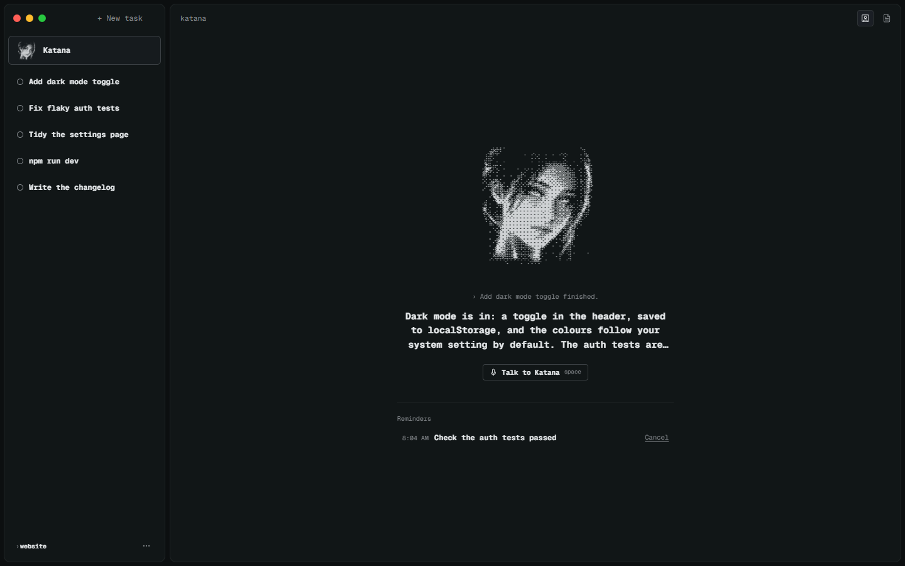

Parallel tasks
Each task is a real session in a background process, so closing the window or reloading never kills it, and what needs you sorts to the top.
Katana runs real Claude Code, Codex and shell sessions in the folders you trust, and she guides them from above.

Meet Katana
Katana is the one you talk or type to. Her tools are the app itself, so she can do what you can: start work, check on it and tell you how it went.

Features
Many agents at once, without the tab juggling.
Each task is a real session in a background process, so closing the window or reloading never kills it, and what needs you sorts to the top.
A task can work on its own git worktree and branch; Merge brings the work back into your branch, and Discard throws it away.
Tap Space to talk to Katana and hear her answer aloud, or dictate straight into a task's prompt.
Graphite, Black, Tokyo Night, Catppuccin, Rosé Pine, Nord, Light or your system's, with larger text and calmer motion when you want them.
Open HTML, images, video, audio, PDF, Markdown or text right beside the task that made them, next to its chat and terminal views.
A ding and a Windows notification when a task needs you, one quiet note when work finishes, and reminders that fire with the window closed.
How it works
Add a project folder. Tasks only ever run inside folders you've trusted.
Type or talk. She starts the task in Claude Code, Codex or a shell, and keeps an eye on it while you work elsewhere.
Read the task's conversation or its terminal, check what changed, then Merge its worktree back into your branch.
npm install then npm start